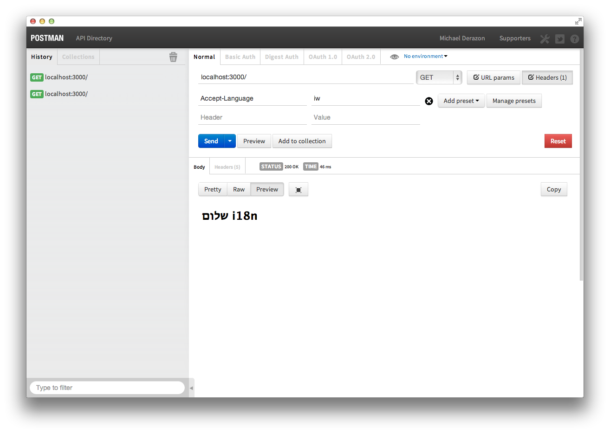

i18n for Node + Express
In this post i'm going to demonstrate a simple way to add multi language support to a node + express project.
Simple server
Lets start with a simple server:
We first require express, then we tell express where to look for our templates files. In this case I used ejs as the template engine. I like it because it's syntax is basically html with special <% ... %> syntax for embedding code from the server. There are other (and more popular) template engines you can chose from.
In line 7 we add a route for / and tell it to render index.ejs.
Lets create our index.ejs file under /views dir.
Nothing special here, just plain html page. Express guesses what type of template to render by the extension. So when it sees index.ejs it knows it should first pass it through the ejs module to render.
Adding translation module
Now lets add the i18n functionality. I use i18n-node module. Create another file i18n.js :
First we set up some configurations. By default, i18n module uses accept-language request header to guess language settings. You can tell it to look for a cookie that contains the language if you want. In this case I used a cookie named lang.
Now lets import our newly created module in our server file:
In line 7 we add the i18n module as middleware. Make sure you put it before any route is defined. What i18n module does is add a special function called __() to the response object. This function takes care of the translation.
We need to add the translation __() method to the view file as well :
Translation files
Now when you run the app, notice that i18n creates a folder in a location we previously defined in i18n.js. This folder will contain the translation files. In my case, I have two locales : en and iw so i18n will create two files :
locales/en.jsonlocales/iw.json
The format is very simple. A valid JSON file that contains "sentence" : "translation" pairs. The first time we try to GET / i18n will automatically populate the files. Since I am using English in my code, i18n will populate en.json with:
{
"Hello i18n": "Hello i18n"
}I will have to edit iw.json with the translation :
{
"Hello i18n": "שלום i18n"
}Results
Lets test that everything is working okay. I am using Postman (which kicks ass) to call the server. First lets make a call with Accept-Language=en header to see the english version :
Now lets change the header for Accept-Language=iw (iw = Hebrew in case you wondered) :

Some notes
- Use escape
\character if you want insert problematic characters :__("can\'t do that"). Otherwise nasty things will happen. - In express
2.xyou need to specifically add__()function to the locals object. Do it by adding the following line just afteri18n.init()in the i18n module :
res.local('__', res.__);comments powered by Disqus